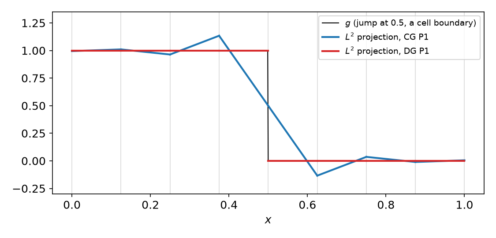
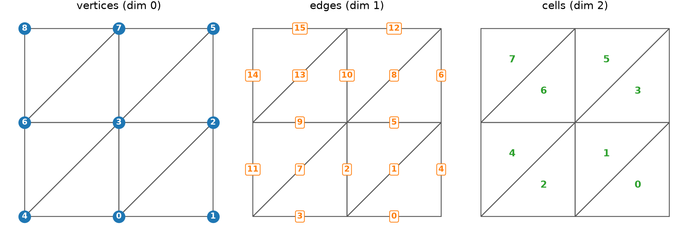
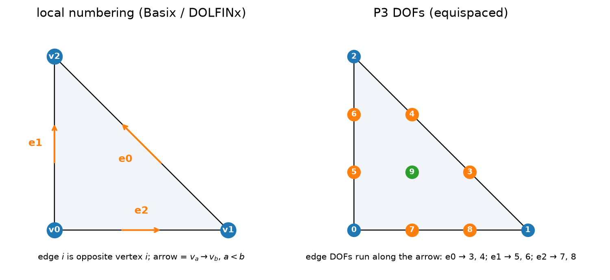
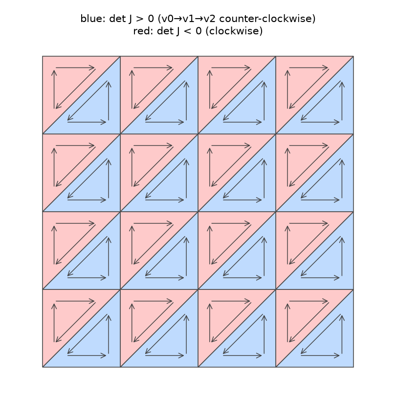
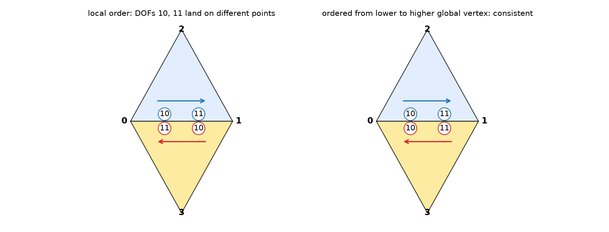
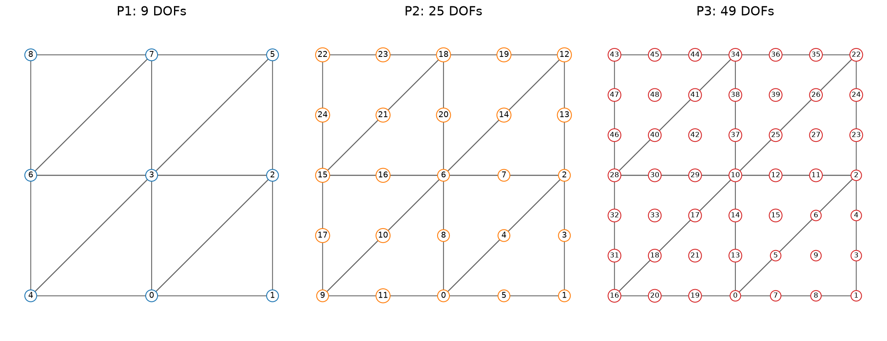
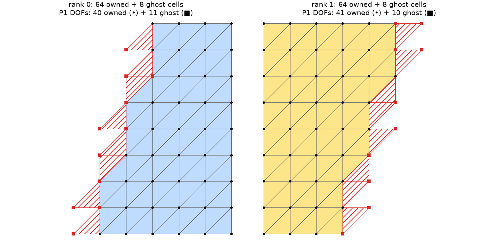

AI-based Materials and Process Simulation I
Week 03 — From Local Elements to a Global Space · Geometric Decomposition and Continuity · DG Spaces · Mesh Topology and the DOF Map in DOLFINx
Process Systems Laboratory
Department of Chemical and Biomolecular Engineering, SeoulTech
Today
| Part | Topic | Time |
|---|---|---|
| Quiz | Week 2 material (closed-AI) | 10 min |
| A | Theory — gluing elements: continuity lemma, geometric decomposition, C^0/C^1, DG spaces | 60 min |
| B | Mesh topology in DOLFINx — entities, adjacency, geometry, the sign of \det J | 40 min |
| C | The DOF map — cell-node map, edge orientation, vector/mixed spaces, parallel numbering | 45 min |
| D | LLM pitfalls with meshes and DOF maps · assignment | 15 min |
Lab notebook: W03_lab.ipynb · Assignment: W03_HW3.ipynb (due before Week 4)
Week 2 in one slide
| Ciarlet element | (K,\mathcal P,\mathcal N) with \mathcal N a basis of \mathcal P' |
| Nodal basis | N_i(\phi_j)=\delta_{ij}, computed from V_{ij}=N_j(\psi_i) |
| Unisolvence | N_i(v)=0\ \forall i \Rightarrow v\equiv0 |
| Basix | create_element, tabulate, points, entity_dofs |
Everything so far lives on one reference cell. This week: how do we glue cells into a global space?
- When is the glued function continuous (C^0)? When is it C^1? (geometric decomposition)
- What if we do not glue at all? (DG spaces)
- How does DOLFINx describe the mesh? (topology, geometry)
- How are global DOF numbers assigned, and what can go wrong? (cell-node map, orientation)
Part A — From Local Elements to a Global Space
§A1 The gluing problem
On each cell K we have an element (K,\mathcal P_K,\mathcal N_K). A global function is defined cell by cell: u|_K=\sum_i u_{K,i}\,\phi_{K,i}\qquad\text{for every } K\in\mathcal T. Which coefficients must agree between neighboring cells so that u is continuous?
Lemma — Continuity (triangles)
Let u|_K be a polynomial on every cell. Then u\in C^m(\Omega) if and only if
- at every vertex z, all derivatives of order \le m of u|_{K} agree for all cells K\ni z, and
- on every interior edge e=K_1\cap K_2, all derivatives of order \le m of u|_{K_1} and u|_{K_2} agree on e.
Inside a cell u is a polynomial, hence smooth. Only the interfaces matter.
§A2 Mesh entities and local geometric decomposition
A triangle has 3 vertices (dim 0), 3 edges (dim 1) and 1 cell (dim 2). The mesh has global vertices, edges and cells.
Definition — Local geometric decomposition
Each nodal variable N_i is associated with one entity w of K (vertex, edge or cell), such that N_i(f) depends only on f and its derivatives on w.
| Element | vertex DOFs | edge DOFs | interior DOFs | total |
|---|---|---|---|---|
| P1 | 1 each | — | — | 3 |
| P2 | 1 each | 1 each | — | 6 |
| P3 | 1 each | 2 each | 1 | 10 |
| Hermite (cubic) | 3 each (f, \nabla f) | — | 1 | 10 |
| Argyris (quintic) | 6 each (f,\nabla f,\nabla^2 f) | 1 each (\partial_n f) | — | 21 |
Basix P3: entity_dofs = [[[0],[1],[2]], [[3,4],[5,6],[7,8]], [[9]]] (vertices, edges, cell).
entity_dofs is the geometric decomposition — you met it last week.
§A3 C^0 geometric decomposition
Definition — C^0 decomposition
For every entity w of K, the nodes associated with the closure \bar w (the entity and its sub-entities) determine f|_w uniquely, i.e. they form a unisolvent set for \mathcal P|_w.
Theorem — Lagrange Pk is C^0
For Pk Lagrange, the closure of every edge carries k+1 nodes (2 vertices + k-1 edge nodes) and f|_e is a 1D polynomial of degree k.
Proof. Let u\in\mathcal P_k vanish at the k+1 closure nodes of e. Then u|_e is a degree-k polynomial in one variable with k+1 distinct zeros, so u|_e\equiv0 (1D unisolvence, Week 2). The vertex case is trivial. \square
Consequence. If two neighbors share the closure DOFs of their common edge, their traces on that edge are the same polynomial → u is continuous. Sharing is exactly what the global numbering must do.
§A4 C^1 geometric decomposition — Hermite vs Argyris
C^1 also needs \partial_n u to match along every edge. Along an edge, \partial_n u of a degree-k polynomial is a 1D polynomial of degree k-1: it needs k conditions.
| degree | \partial_n u|_e degree | conditions needed | from shared DOFs | C^1? | |
|---|---|---|---|---|---|
| Cubic Hermite | 3 | 2 | 3 | 2 | no |
| Quintic Argyris | 5 | 4 | 5 | 2 + 2 + 1 = 5 | yes |
Hermite: \partial_n u at the two end vertices (from \nabla f). Argyris: \partial_n u at both ends (\nabla f), \partial_t\partial_n u at both ends (\nabla^2 f), \partial_n u at the edge midpoint.
You verified the Hermite case numerically in HW2 Q4: the centroid bubble 27\lambda_0\lambda_1\lambda_2 has a nonzero normal derivative on every edge. C^1 elements are rare in practice; fourth-order problems are usually solved with mixed or C⁰ interior-penalty formulations instead.
§A5 From local to global
Definition — Global geometric decomposition
For each global entity w shared by cells K_1,\dots,K_{n_w}: every K_j has the same number M_w of nodes on w, and they can be enumerated so that N^{w}_{1,i}(u|_{K_1})=\dots=N^{w}_{n_w,i}(u|_{K_{n_w}}) for smooth u, i=1,\dots,M_w.
Lemma
A space built by giving all cells around w the same global DOFs for w is C^m if the local decomposition is C^m.
Counting. Each global entity contributes its DOFs once: \dim V_h=\sum_{d=0}^{2} n_d\,m_d,\qquad\text{P}k:\quad \dim V_h = n_V + (k-1)\,n_E + \tfrac{(k-1)(k-2)}{2}\,n_T . For the N\times N “right” mesh: n_V=(N+1)^2, n_E=3N^2+2N, n_T=2N^2 ⇒ \dim V_h=(kN+1)^2. Euler’s formula n_V-n_E+n_T=1 (any triangulation of a simply connected polygon) is a useful check.
§A6 Discontinuous (DG) spaces
Definition — Discontinuous space
V_h^{\rm DG}=\{u:\ u|_K\in\mathcal P_k(K)\ \ \forall K\in\mathcal T\} — no continuity constraints. Every DOF belongs to the cell entity.

| on 8 cells | DOFs | L^2 error |
|---|---|---|
| CG P1 | 9 | 0.134 |
| DG P1 | 16 | 0.000 |
\dim V_h^{\rm DG}=n_T\cdot\dim\mathcal P_k. A jump at a cell boundary is represented exactly; CG overshoots by 13 %.
Uses: DG0 for piecewise-constant material data; DG methods for advection; post-processing of fluxes; H(div)-DG (Week 15).
Part B — Mesh Topology in DOLFINx
§B1 Entities and their numbers

| N\times N mesh | vertices | edges | cells | V-E+F |
|---|---|---|---|---|
| 4×4 triangles (right) | 25 | 56 | 32 | 1 |
| 4×4 triangles (crossed) | 41 | 104 | 64 | 1 |
| 4×4 quadrilaterals | 25 | 40 | 16 | 1 |
§B2 Adjacency and the local numbering convention
\mathrm{Adj}_{d_1,d_2}(i) = the d_2-entities adjacent to entity (d_1,i). In DOLFINx: topology.connectivity(d1, d2).

- Local edge i is opposite local vertex i: edges (v_1v_2),(v_0v_2),(v_0v_1) — checked for all cells of the 2×2 mesh.
c2e.links(c)[i]is the global number of local edge i.- Calling
connectivity(2, 1)beforecreate_connectivity(2, 1)→RuntimeError: Connectivity between dimension 2 and 1 has not been computed. - Upward adjacency (1\to2): edges with one cell are on the boundary. 3×3 mesh: 33 edges = 21 interior + 12 boundary.
§B3 Geometry vs topology — and the sign of \det J
Topology = who is connected to whom. Geometry = where the nodes are.
msh.geometry.dofmap still works in 0.11 but prints a DeprecationWarning: use dofmaps[0].

| 4×4 mesh | cells with \det J<0 |
|---|---|
right |
16 / 32 |
left |
16 / 32 |
crossed |
32 / 64 |
- DOLFINx does not orient cells counter-clockwise. Half of the cells have \det J<0.
- \sum\det J/2 = 0, but \sum|\det J|/2=1 (the area).
- Assembly uses |\det J|, so this is harmless — unless your own code assumes \det J>0.
§B4 Boundaries
- Without
create_connectivity(fdim, tdim):RuntimeError: Facet to cell connectivity has not been computed. - 3×3 mesh: 12 boundary facets (4N). Geometric selection (
locate_entities_boundarywith a marker function) comes in Week 6.
| Textbook | DOLFINx 0.11 |
|---|---|
| number of entities of dim d | topology.index_map(d).size_local (after create_entities(d)) |
| \mathrm{Adj}_{d_1,d_2}(i) | create_connectivity(d1, d2); connectivity(d1, d2).links(i) |
| vertex coordinates | geometry.x[:, :gdim] |
| coordinates of cell c | geometry.x[geometry.dofmaps[0][c]] |
| boundary facets | exterior_facet_indices(topology) |
Part C — The DOF Map
§C1 The cell-node map
Definition — Cell-node map
M(c,i) = global number of the i-th local DOF of cell c. Assembly uses only M: \;K_{M(c,i),M(c,j)} \mathrel{+}= K^{(c)}_{ij}.
Construction (Pk on triangles). Number the global entities, then give each entity its DOFs once:
- vertex v → DOF v
- edge e → DOFs n_V+(k-1)e,\ \dots,\ n_V+(k-1)e+k-2
- cell c → interior DOFs after all edges
and fill M(c,\cdot) by walking over the local entities of c in Basix order (entity_dofs), using c2v and c2e.
For P1 and P2 this is all. For P3 there is a catch.
§C2 The edge-orientation problem (k\ge3)
An edge with two DOFs: local DOF 3 lies at 1/3 of the way along the local edge from its lower to its higher local vertex. Two neighbors may run along the shared edge in opposite directions.

Fix: order the DOFs of a global edge from its lower to its higher global vertex. In a cell where the local direction disagrees, reverse them.
§C2 Orientation — what DOLFINx does
| Element | Basix dof_transformations_are_identity |
are_permutations |
V.element.needs_dof_transformations |
|---|---|---|---|
| P2 | True | True | False |
| P3, P4 | False | True | False |
| N1curl (Nédélec) | — | — | True |
- For Lagrange the fix is a permutation, and DOLFINx bakes it into
cell_dofs. You never see it. - For H(curl)/H(div) elements it also involves sign changes, applied during assembly (Course I, Week 15).
- Built-in meshes happen to traverse shared edges consistently; meshes read from files (Gmsh) in general do not. A cell-node map that ignores orientation looks correct on
create_unit_squareand fails on real meshes.
§C3 The DOLFINx dofmap

| 4×4 mesh | k=1 | k=2 | k=3 | k=4 |
|---|---|---|---|---|
| CG: (4k+1)^2 | 25 | 81 | 169 | 289 |
| DG: 32\cdot\frac{(k+1)(k+2)}{2} | 96 | 192 | 320 | 480 |
§C4 Vector and mixed spaces
size_global counts blocks (nodes), not scalar DOFs. Multiply by index_map_bs.
P2v = basix.ufl.element("Lagrange", "triangle", 2, shape=(2,))
P1 = basix.ufl.element("Lagrange", "triangle", 1)
W = fem.functionspace(msh, basix.ufl.mixed_element([P2v, P1])) # Taylor–Hood
W.dofmap.index_map.size_global # → 187 = 162 + 25 (bs = 1)
W0, maps0 = W.sub(0).collapse() # maps0: list of arrays — W0 DOF i is W DOF maps0[0][i]| mesh | velocity (P2²) | pressure (P1) | total |
|---|---|---|---|
| 4×4 | 162 | 25 | 187 |
| 8×8 | 578 | 81 | 659 |
Velocity and pressure DOFs are interleaved in W; collapse() gives the separate space and the index map back into W.
§C5 Parallel: owned and ghost DOFs

- Each rank owns some cells and DOFs and keeps ghost copies of its neighbors’ DOFs (needed to assemble its own cells).
index_map.size_local(owned) ·num_ghosts·size_global= \sum_{\rm ranks}size_local. Local numbering: owned first, then ghosts.- The partition depends on the partitioner and the number of ranks: never hard-code local counts.
§C6 Math → DOLFINx
| Concept | Math | DOLFINx 0.11 |
|---|---|---|
| Geometric decomposition | N_i\leftrightarrow entity | basix_element.entity_dofs, dofmap.dof_layout.entity_dofs(d, i) |
| Global space | V_h, \dim V_h=\sum n_d m_d | fem.functionspace(msh, ("Lagrange", k)) |
| DG space | no sharing | ("DG", k) or basix.ufl.element(..., discontinuous=True) |
| Cell-node map | M(c,i) | V.dofmap.cell_dofs(c)[i], V.dofmap.list |
| DOF positions | Lagrange nodes | V.tabulate_dof_coordinates() |
| Vector DOF count | d\cdot\dim V_h | size_global * index_map_bs |
| Mixed sub-space | W=V\times Q | W.sub(i).collapse() → (space, [map]) |
| Parallel | owned + ghost | index_map.size_local, num_ghosts, size_global |
Part D — LLMs, Meshes and DOF Maps · Assignment
§D1 Where LLM-generated mesh/DOF code goes wrong
| Kind | What it looks like | Detection |
|---|---|---|
| Stale or deprecated API | attributes that were renamed or removed between DOLFINx versions | warnings in the output; the API sheet |
| Wrong data structure | treating a NumPy array as an AdjacencyList or the reverse |
type(...); read the error message |
| Missing setup | using an adjacency before it has been created | RuntimeError naming the missing connectivity |
| Counting | blocks vs scalar DOFs; local vs global counts | compare with \dim V_h by hand; run with -np 2 |
| Geometric assumptions | assuming an ordering or orientation of cell vertices that DOLFINx does not guarantee | a check with a known answer (total area = 1) |
Universal checks: Euler’s formula, \dim V_h by hand, total area, and serial = parallel.
Assignment — HW3, due before the Week 4 lecture
HW3 — Implement a cell-node map (100)
- Q1 proofs: C^0 continuity of global Pk; the dimension formula; why orientation matters only for k\ge3 (20)
- Q2 your own edge numbering and cell-node map for P1–P3 on a mesh with arbitrary local vertex order; verification against DOLFINx (40)
- Q3 CG vs DG and the parallel index map (15)
- Q4 LLM-generated mesh code with planted bugs: find, explain, fix (25)
Submit the executed .ipynb (restart & run all) with the AI-usage log.
Reminder: an error in a %%fenicsx cell does not stop Run all. Read every output before you submit.
Summary
| Concept | Key idea | DOLFINx |
|---|---|---|
| Continuity lemma | only vertices and edges matter | — |
| Geometric decomposition | each DOF ↔︎ one entity | entity_dofs |
| C^0 / C^1 | closure DOFs determine u|_w (and \partial_n u|_w) | Lagrange: C^0; Argyris: C^1; Hermite: not C^1 |
| DG | no sharing, \dim=n_T\dim\mathcal P_k | ("DG", k) |
| Topology / geometry | adjacency vs coordinates; \det J of either sign | connectivity, geometry.dofmaps[0] |
| Cell-node map | shared entity ⇒ shared DOF; orient edges for k\ge3 | dofmap.cell_dofs, index_map, index_map_bs |
Next week — interpolation
Local and global interpolation operators, H^k norms, averaged Taylor polynomials, scaling; fem.Function, interpolate, and L^2/H^1 errors in DOLFINx.